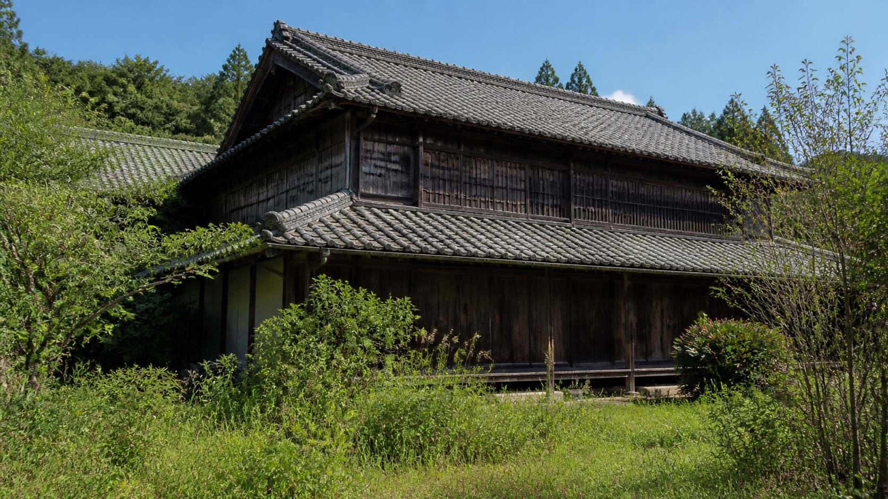
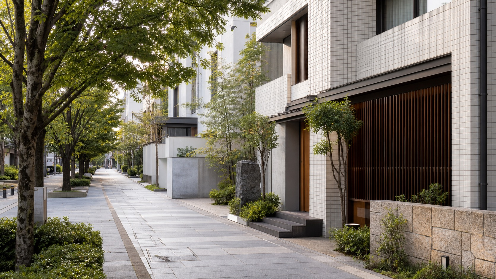
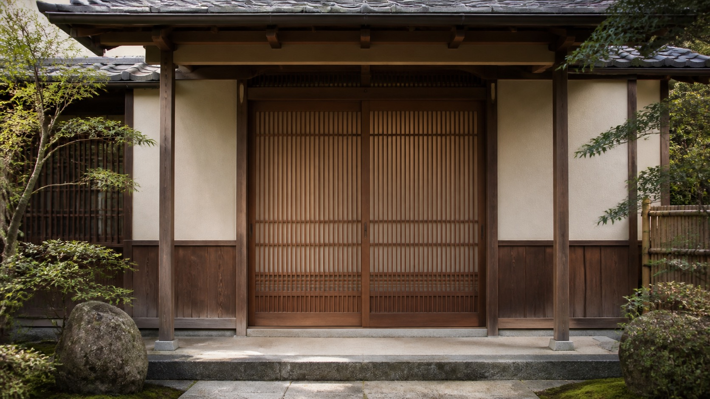
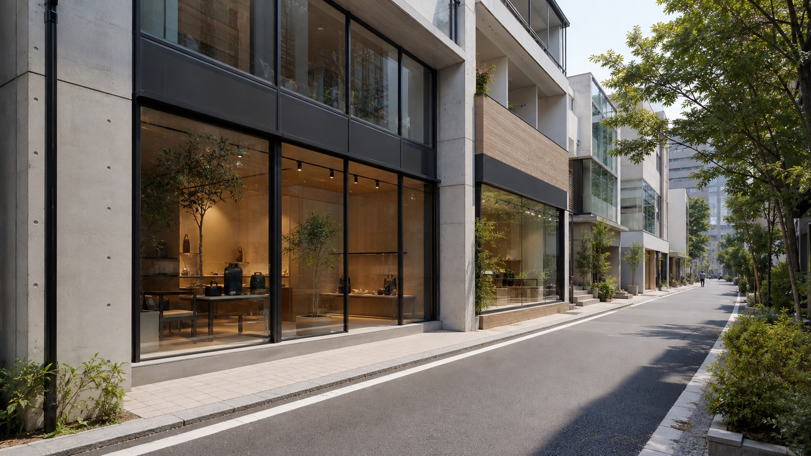

01
不動産の買取・再生
古民家、長期の空室、使われなくなった建物を買い取ります。
現況のままで構いません。手を入れるのは私たちの仕事です。

相続した家。長く空いたままの店舗。古くて手が入れられない建物。
そのままの状態で買い取り、設計しなおして、次の使い手へ渡します。
建物が空いたままになる理由は、ひとつではありません。
相続したまま決めきれない。借り手がつかない。古くて手が入れられない。
私たちは、そうした建物を買い取り、設計しなおし、
もう一度使える状態にしてから、次の使い手へ渡しています。
壊してしまえば早い、という考え方は取りません。
まだ使えるものを、使えるかたちに戻すことが、この街では価値になると考えています。

01
古民家、長期の空室、使われなくなった建物を買い取ります。
現況のままで構いません。手を入れるのは私たちの仕事です。


03
貸店舗・事業用物件のご紹介と、テナントの募集を行っています。
南青山を中心に、街に合う使い手を探します。
04
売買の仲介、賃貸マンションのご紹介、入居後の管理まで。
引き渡して終わりにはしません。
05
買い取った建物の設計は、自社で行っています。
図面を描けることが、買い取れる範囲を広げています。
どちらが良いということはありません。何を優先するかで決まります。
OPTION 01
私たちが直接買い取ります。買い手を探す期間がかからず、引き渡しまでの見通しが立ちます。家財が残っていても、傷んでいても構いません。
そのかわり、価格は市場で売る場合より低くなります。
OPTION 02
市場で買い手を探します。買取より高い価格になる可能性があります。
そのかわり、売れるまでの期間は読めません。内覧の立ち会いや、片づけが必要になることもあります。
空間デザインを自社で持っています。図面を描けるので、「直せる建物かどうか」を先に判断できます。他社が断った建物でも、使い道が見つかることがあります。
家財も、庭木も、残置物もそのままで構いません。
相続は不動産だけでは終わりません。
【ここに提携している司法書士・税理士の名称を入れてください】
管理業務まで自社で行っています。引き渡して終わりにはしません。
建物の状態や、これからどうするかが決まっていない段階でも、お話を伺います。
「売ると決めたわけではない」という段階のご相談が、いちばん多いです。
電話する
03-6805-1142
平日 9:00〜18:00
メールで相談
info@wty-tokyo.com
翌営業日までにご返信します